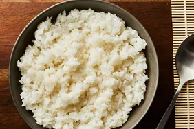

Rice Recipe

Description
Sushi rice is less of a type of rice than it is a preparation method.
It's cooked short-grain white rice combined with rice vinegar and other ingredients, cooled completely,
and then used to make sushi rolls.
The best rice for sushi is short-grain Japanese rice — this is what's in the bags labeled "sushi rice" at the store.
This glutinous rice has a higher starch content than other varieties, which gives it the sticky texture you're after when you make sushi.
Ingredients
- 2 cups uncooked sushi rice
- 3 cups water
- ½ cup rice vinegar or less to taste
- 1 tablespoon vegetable oi
- ¼ cup white sugar or less to taste
- 1 teaspoon salt or less to taste
steps
- Gather all the ingredients
- Rinse the rice in a strainer or a colander under running cold water until the water runs clear.
- Combine rice and water in a saucepan over medium-high heat and bring to a boil.
Reduce heat to low, cover, and cook until rice is tender and all water has been absorbed, about 20 minutes.
Remove from stove and set aside until cool enough to handle.
- Meanwhile, combine rice vinegar, oil, sugar, and salt in a small saucepan over medium heat.
Cook until the sugar has dissolved. Allow to cool. Then stir into the cooked rice. While mixture will appear very wet at first,
keep stirring and rice will dry as it cools.
- Then stir into the cooked rice. While mixture will appear very wet at first,
keep stirring and rice will dry as it cools.
- Serve and enjoy!